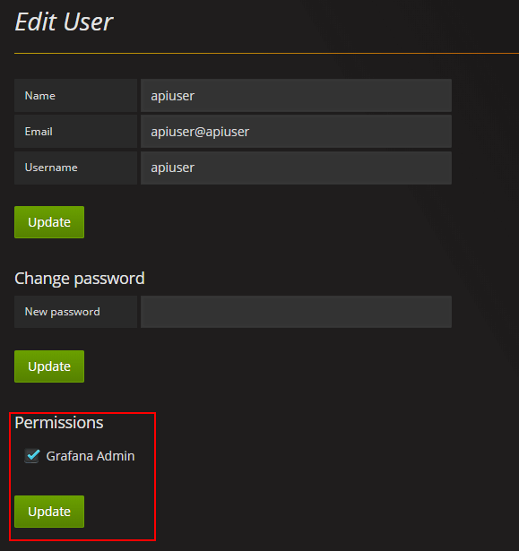

Grafana
grafana集成于情报中心中用于数据展示，可展示opentsdb和elasticsearch中的数据。
grafana安装详见https://grafana.com/ grafana配置详见https://docs.grafana.org/installation/configuration/
情报中心一个uav用户对应一个grafana用户，uav中应用组对应grafana中organization，uav用户对organization的权限与对应用组的权限一致。
AppHub与Grafana对接
Grafana安装完并且保持与AppHub的网络连通后，进行以下操作：
1、调整Grafana的配置 禁止登出、禁止注册、默认org设置、默认org权限设置、普通用户菜单权限等，参考如下：
配置路径：@pwd/grafana/conf/defaults.ini
配置参考：
app_mode = production
instance_name = ${HOSTNAME}
[paths]
data = data
logs = data/log
plugins = data/plugins
[server]
protocol = http
http_addr =
http_port = 3000
domain = localhost
enforce_domain = false
root_url = %(protocol)s://%(domain)s:%(http_port)s/
router_logging = false
static_root_path = public
enable_gzip = false
cert_file =
cert_key =
socket = /tmp/grafana.sock
[database]
type = sqlite3
host = 127.0.0.1:3306
name = grafana
user = root
password =
url =
max_idle_conn =
max_open_conn =
ssl_mode = disable
ca_cert_path =
client_key_path =
client_cert_path =
server_cert_name =
path = grafana.db
[session]
provider = file
provider_config = sessions
cookie_name = grafana_sess
cookie_secure = false
session_life_time = 86400
gc_interval_time = 86400
[dataproxy]
logging = false
[analytics]
reporting_enabled = true
check_for_updates = true
google_analytics_ua_id =
google_tag_manager_id =
[security]
admin_user = admin
admin_password = admin
secret_key = SW2YcwTIb9zpOOhoPsMm
login_remember_days = 7
cookie_username = grafana_user
cookie_remember_name = grafana_remember
disable_gravatar = false
data_source_proxy_whitelist =
[snapshots]
external_enabled = true
external_snapshot_url = https://snapshots-origin.raintank.io
external_snapshot_name = Publish to snapshot.raintank.io
snapshot_remove_expired = true
snapshot_TTL_days = 90
[users]
allow_sign_up = true
allow_org_create = true
auto_assign_org = true
auto_assign_org_role = Viewer
verify_email_enabled = false
login_hint = email or username
default_theme = dark
[auth]
disable_login_form = false
disable_signout_menu = false
[auth.anonymous]
enabled = false
org_name = Main Org.
org_role = Viewer
[auth.github]
enabled = false
allow_sign_up = true
client_id = some_id
client_secret = some_secret
scopes = user:email
auth_url = https://github.com/login/oauth/authorize
token_url = https://github.com/login/oauth/access_token
api_url = https://api.github.com/user
team_ids =
allowed_organizations =
[auth.google]
enabled = false
allow_sign_up = true
client_id = some_client_id
client_secret = some_client_secret
scopes = https://www.googleapis.com/auth/userinfo.profile https://www.googleapis.com/auth/userinfo.email
auth_url = https://accounts.google.com/o/oauth2/auth
token_url = https://accounts.google.com/o/oauth2/token
api_url = https://www.googleapis.com/oauth2/v1/userinfo
allowed_domains =
hosted_domain =
[auth.grafananet]
enabled = false
allow_sign_up = true
client_id = some_id
client_secret = some_secret
scopes = user:email
allowed_organizations =
[auth.grafana_com]
enabled = false
allow_sign_up = true
client_id = some_id
client_secret = some_secret
scopes = user:email
allowed_organizations =
[auth.generic_oauth]
name = OAuth
enabled = false
allow_sign_up = true
client_id = some_id
client_secret = some_secret
scopes = user:email
auth_url =
token_url =
api_url =
team_ids =
allowed_organizations =
[auth.basic]
enabled = true
[auth.proxy]
enabled = false
header_name = X-WEBAUTH-USER
header_property = username
auto_sign_up = true
ldap_sync_ttl = 60
whitelist =
[auth.ldap]
enabled = false
config_file = /etc/grafana/ldap.toml
allow_sign_up = true
[smtp]
enabled = false
host = localhost:25
user =
password =
cert_file =
key_file =
skip_verify = false
from_address = admin@grafana.localhost
from_name = Grafana
[emails]
welcome_email_on_sign_up = false
templates_pattern = emails/*.html
[log]
mode = console file
level = info
filters =
[log.console]
level =
format = console
[log.file]
level =
format = text
log_rotate = true
max_lines = 1000000
max_size_shift = 28
daily_rotate = true
max_days = 7
[log.syslog]
level =
format = text
network =
address =
facility =
tag =
[event_publisher]
enabled = false
rabbitmq_url = amqp://localhost/
exchange = grafana_events
[dashboards.json]
enabled = false
path = /var/lib/grafana/dashboards
[quota]
enabled = false
org_user = 10
org_dashboard = 100
org_data_source = 10
org_api_key = 10
user_org = 10
global_user = -1
global_org = -1
global_dashboard = -1
global_api_key = -1
global_session = -1
[alerting]
enabled = true
execute_alerts = true
[metrics]
enabled = true
interval_seconds = 10
[metrics.graphite]
address =
prefix = prod.grafana.%(instance_name)s.
[grafana_net]
url = https://grafana.com
[grafana_com]
url = https://grafana.com
[external_image_storage]
provider =
[external_image_storage.s3]
bucket_url =
access_key =
secret_key =
[external_image_storage.webdav]
url =
username =
password =
public_url =
2、Grafana为AppHub创建Api专属用户
使用admin用户（admin用户\密码参考Grafana配置文件）登陆Grafana，进入用户操作功能

创建api用户

编辑apiuser

勾选上Admin权限

3、配置AppHub web.xml配置
param-name（uav.apphub.sso.grafana.connection.info）的param-value：
{
"api.url": "http://127.0.0.1:3000",
"web.url": "http://127.0.0.1:3000",
"datasource.opentsdb.url": "http://127.0.0.1:4243",
"datasource.elasticsearch.url": "http://127.0.0.1:9200",
"authorization.loginId": "apiuser",
"authorization.loginPwd": "apiuser",
"authorization.register.defPwd": "1q@W3e",
"authorization.register.sleep.time": "2000"
}
字段说明：
"api.url": Grafana访问地址，用于api调用
"web.url": Grafana登陆地址，用于AppHub授权后跳转登陆地址（如域名）
"datasource.opentsdb.url": opentsdb访问地址，AppHub创建dashboard时使用
"datasource.elasticsearch.url": es访问地址，AppHub创建dashboard时使用
"authorization.loginId": Grafana Api专属用户名
"authorization.loginPwd": Grafana Api专属用户密码
"authorization.register.defPwd": AppHub自动注册的Grafana用户统一默认密码
"authorization.register.sleep.time": AppHub每次访问Grafana api时，线程间隔时间，因为是异步调用需要保证请求交互完成
初始化dashboard
uav中应用集群对应grafana中的一个dashboard，在情报中心管理页面可初始化应用集群的dashboard。